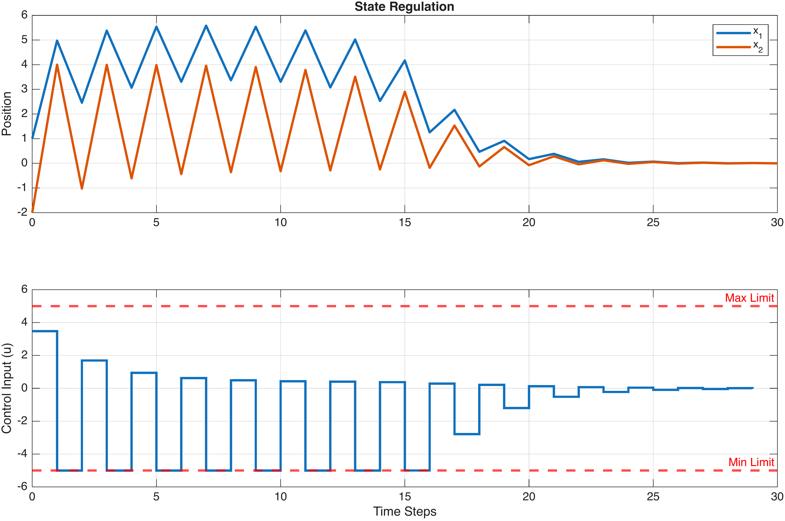
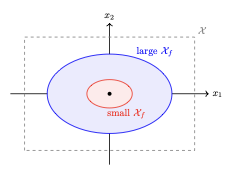

“MPC is like playing chess: you predict several moves ahead, pick the best move, execute it, and then – because the opponent [uncertainty] might play differently than expected – you re-evaluate the board and plan again.”
— paraphrasing the receding horizon principle
This chapter extends unconstrained optimal control (LQR) to handle physical limits. We define the Linear MPC problem, showing how actuator saturation and safety constraints are incorporated directly into the optimisation. We then cover the Receding Horizon principle, introduce the YALMIP toolbox for implementation, and analyse how the prediction horizon \(N\) and the terminal cost \(P\) affect closed-loop stability and performance.
In the previous chapters, we derived the Linear Quadratic Regulator (LQR). This method provides a closed-form solution to the optimal control problem, yielding a static feedback gain matrix \(K\). However, LQR relies on a critical, often unrealistic assumption: the system operates in an unconstrained linear world.
In physical reality, every engineering system has limits:
Actuator Saturation: A motor has a maximum voltage; a valve cannot open beyond 100%.
Safety Constraints: A chemical reactor must not exceed a critical pressure; a robotic arm must stay within a defined workspace.
Performance Bounds: A passenger vehicle must limit acceleration to ensure comfort.
A common naive approach is to design an LQR controller and simply clip or saturate the control signal if it exceeds the limit: \[u = \text{sat}(-Kx) = \begin{cases} u_\text{max} & -Kx \ge u_\text{max} \\ u_\text{min} & -Kx \le u_\text{min} \\ -Kx & \text{otherwise} \end{cases}\] While this works for small disturbances, it breaks the mathematical guarantee of optimality and stability. Saturating the input effectively turns a linear system into a non-linear one. If the LQR controller requests a strong braking force to stabilise a fast-moving vehicle, but the actuator saturates, the vehicle may overshoot or become unstable because the "planned" energy dissipation did not occur.
Model Predictive Control (MPC) fundamentally alters this approach. Instead of calculating a control law offline (like the LQR gain \(K\)), MPC solves a constrained optimisation problem online at every time step.
By incorporating the constraints directly into the prediction model, MPC "knows" about the limits in advance. It does not blindly request impossible inputs; instead, it plans a trajectory that rides the very edge of the feasible region without crossing it. This capability—to operate safely and optimally against constraints—is what makes MPC the standard in advanced industrial control.
In this chapter, we will formulate the Linear MPC problem and demonstrate how to implement it efficiently using the YALMIP toolbox.
The fundamental goal of MPC is to compute a sequence of future control inputs that drives the system state to the origin (or a target setpoint) whilst satisfying all physical constraints.
At every sampling instant \(t\), we measure the current state of the system, denoted as \(x(t)\). We then define an optimal control problem over a finite prediction horizon of \(N\) steps. To distinguish the prediction from the actual system evolution, we use the index \(k\) to denote the steps into the future (where \(k=0\) represents the current time \(t\)).
We solve the following constrained optimisation problem:
\[\begin{equation} \label{eq:mpc_cost} \min_{{u}, {x}} J = \underbrace{x_N^\top Q_N x_N}_{\text{Terminal Cost}} + \sum_{k=0}^{N-1} \left( \underbrace{x_k^\top Q x_k}_{\text{State Penalty}} + \underbrace{u_k^\top R u_k}_{\text{Control Effort}} \right) \end{equation}\]
Subject to: \[\begin{align*} \textbf{Initialisation:} \quad & x_0 = x(t) && (\text{Current measured state}) \\ \textbf{Model Dynamics:} \quad & x_{k+1} = A x_k + B u_k, && k=0,\dots,N-1 \\ \textbf{Actuator Limits:} \quad & u_{\min} \le u_k \le u_{\max}, && k=0,\dots,N-1 \\ \textbf{Safety Limits:} \quad & x_{\min} \le x_k \le x_{\max}, && k=1,\dots,N \end{align*}\]
Where:
\({u} = \{u_0, u_1, \dots, u_{N-1}\}\) is the sequence of future control inputs to be optimised.
\({x} = \{x_1, x_2, \dots, x_N\}\) is the sequence of predicted states.
\(Q \succeq 0\) and \(R \succ 0\) are the stage cost weighting matrices.
\(Q_N \succeq 0\) is the terminal weight, often chosen to approximate the infinite-horizon cost (i.e., the solution to the Riccati equation, \(P\)).
The defining feature of MPC is its Receding Horizon strategy. Rather than computing a single fixed trajectory from start to finish, the controller operates in a loop:
Measure: Obtain the current state \(x(t)\).
Solve: Compute the optimal sequence \(\{u_0, u_1, \dots, u_{N-1}\}\) by solving the constrained optimisation problem ([eq:mpc_cost]).
Apply: Inject only the first input \(u_0\) into the system. The rest of the sequence is discarded.
Recede: Wait for the next sampling instant \(t+1\), measure the new state \(x(t+1)\), and repeat the process.
By re-solving the problem at every time step based on fresh measurements, the MPC converts an open-loop optimal plan into a closed-loop feedback strategy, capable of rejecting disturbances and correcting model mismatches.
Hand-Worked MPC: Scalar Integrator with Constraints We now solve the MPC problem entirely by hand to make the mechanics concrete before moving to MATLAB.
System: \[x_{k+1} = x_k + u_k \qquad \text{(pure integrator)}\] Parameters: \(Q = 1\), \(R = 1\), \(Q_N = 1\), prediction horizon \(N = 2\), input constraint \(|u_k| \le 0.5\).
Initial condition: \(x_0 = 1\).
Step 1 — Write the predicted states in terms of the decisions: \[\begin{align*} x_1 &= x_0 + u_0 = 1 + u_0 \\ x_2 &= x_1 + u_1 = 1 + u_0 + u_1 \end{align*}\]
Step 2 — Substitute into the cost function: \[\begin{align*} J &= \underbrace{x_0^2}_{=1} + u_0^2 + \underbrace{x_1^2}_{(1+u_0)^2} + u_1^2 + \underbrace{x_2^2}_{(1+u_0+u_1)^2} \end{align*}\] Expanding and collecting: \[J = 3 + 4u_0 + 2u_1 + 3u_0^2 + 2u_0 u_1 + 2u_1^2\] This is a quadratic in \(u = [u_0 \;\; u_1]^\top\): \[J = u^\top \underbrace{\begin{bmatrix} 3 & 1 \\ 1 & 2 \end{bmatrix}}_{H} u + \underbrace{\begin{bmatrix} 4 \\ 2 \end{bmatrix}^\top}_{f^\top} u + 3\]
Step 3 — Solve the unconstrained QP:
Setting \(\nabla_{u} J = 2Hu + f = 0\): \[u^\star = -\tfrac{1}{2}H^{-1}f = -\frac{1}{2} \cdot \frac{1}{5}\begin{bmatrix} 2 & -1 \\ -1 & 3 \end{bmatrix}\begin{bmatrix} 4 \\ 2 \end{bmatrix} = -\frac{1}{10}\begin{bmatrix} 6 \\ 2 \end{bmatrix} = \begin{bmatrix} -0.6 \\ -0.2 \end{bmatrix}\]
Step 4 — Check constraints:
Since \(|u_0^\star| = 0.6 > 0.5\), the constraint is violated. We set \(u_0 = -0.5\) (at its bound) and re-optimise over \(u_1\) alone: \[x_1 = 1 - 0.5 = 0.5, \qquad x_2 = 0.5 + u_1\] \[J(u_1) = u_1^2 + (0.5 + u_1)^2 + \text{const.} = 2u_1^2 + u_1 + \text{const.}\] \[\frac{dJ}{du_1} = 4u_1 + 1 = 0 \quad\Longrightarrow\quad u_1^\star = -0.25 \quad (\text{feasible})\]
Step 5 — Apply the Receding Horizon:
We apply only \(u_0^\star = -0.5\) and discard \(u_1^\star = -0.25\).
The plant advances: \(x_1 = 0.5\). We now re-measure and re-solve with \(x_0 = 0.5\).
Since the problem is linear in \(x_0\), the new unconstrained solution scales: \(u^\star = 0.5 \times [-0.6,\; -0.2]^\top = [-0.3,\; -0.1]^\top\). Both inputs satisfy \(|u_k| \le 0.5\), so the constraints are inactive. We apply \(u_0 = -0.3\) and the state moves to \(x_1 = 0.2\).
Summary of the closed-loop trajectory:
| Step \(t\) | \(x(t)\) | \(u^\star_0\) | Constraint active? |
|---|---|---|---|
| 0 | 1.0 | \(-0.50\) | Yes |
| 1 | 0.50 | \(-0.30\) | No |
| 2 | 0.20 | \(-0.12\) | No |
| 3 | 0.08 | \(\cdots\) | No |
Key observations:
The constraint is active only at the first step, when the state is large. As \(x\) shrinks, the problem becomes unconstrained and the MPC law approaches the LQR law.
Only the first input is ever applied — re-planning at each step provides feedback.
The QP matrices \(H\) and \(f\) are fixed; only \(f\) changes with \(x_0\). This is why the optimizer object in the next section treats \(x_0\) as a parameter.
To implement MPC, we utilise YALMIP , a MATLAB toolbox that allows us to define optimisation problems using high-level symbolic code.
A naive implementation would define and solve the problem from scratch inside the simulation loop. This is computationally prohibitive because YALMIP would need to re-parse the mathematical structure every few milliseconds. Instead, we use a technique known as Parametric Programming.
We construct the problem once offline, treating the initial state \(x_0\) as a symbolic parameter. The YALMIP optimizer object then maps this parameter to the optimal decision variables, allowing for extremely fast execution during the simulation.
Before writing the code that solves standard MPC, we must ensure stability . For a finite horizon \(N\), MPC is not automatically guaranteed to stabilise the system. To address this, we include a Terminal Cost weighted by a matrix \(Q_N\): \[\begin{equation*} J_{term} = x_N^\top Q_N x_N \end{equation*}\]
Selection of the terminal weight \(Q_N\) Choosing the terminal weight as \[Q_N = P,\] where \(P\) is the positive semidefinite solution of the discrete algebraic Riccati equation \[P = A^\top P A - A^\top P B (R + B^\top P B)^{-1} B^\top P A + Q,\] is a natural and important choice because it matches the infinite-horizon LQR cost-to-go. In the unconstrained case, this choice makes the finite-horizon MPC law consistent with the LQR solution near the origin.
In the constrained case, however, the terminal cost \(P\) alone does not in general guarantee closed-loop stability for arbitrary horizon lengths. A rigorous stability guarantee typically also requires a suitable terminal set and a terminal control law such that, inside the terminal set, the constraints remain satisfied and the terminal cost decreases under the terminal controller. Therefore, \(Q_N=P\) should be viewed as an essential stabilising ingredient, but not as a complete stability guarantee by itself unless the unconstrained LQR tail is known to be feasible.
The following script demonstrates the complete setup. Note that MATLAB uses 1-based indexing, so the symbolic variable x{k} corresponds to the mathematical state \(x_{k-1}\).
A = [1.1 1; 0 1]; B = [0; 1]; % Example System
nx = 2; nu = 1;
N = 10; % Prediction Horizon
% 2. Weights and Constraints
Q = eye(nx); R = 0.1;
[P, ~, ~] = dare(A, B, Q, R); % Terminal Weight (Stability)
u_max = 1; x_max = 5;
u_min = -1; x_min = -5;
% 3. Define Symbolic Variables
% u(:,k) represents input u_{k-1}
% x(:,k) represents state x_{k-1}
u = sdpvar(nu, N);
x = sdpvar(nx, N+1);
% 4. Build Objective and Constraints Loop
constraints = [];
objective = 0;
for k = 1:N
% Stage Cost
objective = objective + x(:,k)'*Q*x(:,k) + u(:,k)'*R*u(:,k);
% Dynamics Constraint: x_{k} = A*x_{k-1} + B*u_{k-1}
constraints = [constraints, x(:,k+1) == A*x(:,k) + B*u(:,k)];
% Physical Constraints
constraints = [constraints, u_min <= u(:,k) <= u_max];
constraints = [constraints, x_min <= x(:,k) <= x_max];
end
% Terminal Cost (The "Anchor" for stability)
objective = objective + x(:,N+1)'*P*x(:,N+1);
% 5. Create the Optimizer Object
% We treat the 'current state' (x(:,1)) as a PARAMETER.
% The solver will return the 'first input' (u(:,1)).
parameters_in = x(:,1);
solutions_out = u(:,1);
controller = optimizer(constraints, objective, [], parameters_in, solutions_out);
% --- SIMULATION USAGE ---
% Inside the simulation loop, we simply call:
% u_optimal = controller(x_current);Indexing Alert Pay close attention to indexing. In mathematics, we start at \(k=0\) (current state). In MATLAB, indices start at 1. Therefore:
Math \(x_0\) \(\rightarrow\) Code x(:,1) (The Parameter)
Math \(u_0\) \(\rightarrow\) Code u(:,1) (The Output to apply)
Math \(x_N\) \(\rightarrow\) Code x(:,N+1) (The Terminal State)
MATLAB: Full MPC Simulation with YALMIP System Definition: We consider a discrete-time linear system with unstable and oscillatory dynamics. The state-space matrices are: \[\begin{equation*} A = \begin{bmatrix} 1.5 & 0 \\ 1 & -1.5 \end{bmatrix}, \quad B = \begin{bmatrix} 1 \\ 0 \end{bmatrix} \end{equation*}\] Note that the eigenvalue \(\lambda = -1.5\) introduces a discrete-time oscillation (sign flipping at every step) combined with unstable growth, making this a challenging control target.
The MPC Optimisation Problem: At each sampling instant, the controller solves the following quadratic programme (i.e. an optimisation problem with a quadratic cost function and linear constraints) with a prediction horizon of \(N=5\):
\[\begin{equation*} \min_{u_0, \dots, u_{N-1}} J = x_N^\top P x_N + \sum_{k=0}^{N-1} \left( x_k^\top Q x_k + u_k^\top R u_k \right) \end{equation*}\] where \(P\) is the LQR solution of the discrete-time Riccati equation.
Subject to: \[\begin{align*} x_{k+1} &= A x_k + B u_k & \text{(Dynamics)}\\ -5 &\leq u_k \leq 5 & \text{(Input Saturation)}\\ \begin{bmatrix} -10 \\ -10 \end{bmatrix} &\leq x_k \leq \begin{bmatrix} 10 \\ 10 \end{bmatrix} & \text{(State Safety)}\\ x_0 &= x(t) & \text{(Measurement)} \end{align*}\]
Parameters:
Weights: \(Q = I_2\), \(R = 20\). The high input cost \(R\) penalises aggressive control actions.
Terminal Cost: \(P_N\) is the unique positive-definite solution to the unconstrained LQR Algebraic Riccati Equation.
Figure [fig:simplempc] shows the simulation result obtained after using the code provided below.
A = [1.5 0; 1 -1.5]; B = [1; 0];
nx = 2; nu = 1;
Q = eye(2); R = 20;
[P,~,~] = dare(A,B,Q,R);
u_min = -5; u_max = 5;
x_min = [-10; -10]; x_max = [10; 10];
N = 5;
% 2. YALMIP Formulation
u = sdpvar(nu, N);
x = sdpvar(nx, N+1);
x_init = sdpvar(nx, 1);
obj = 0;
cons = [x(:,1) == x_init];
for k = 1:N
obj = obj + x(:,k)'*Q*x(:,k) + u(:,k)'*R*u(:,k);
cons = [cons, x(:,k+1) == A*x(:,k) + B*u(:,k)];
cons = [cons, u_min <= u(:,k) <= u_max];
cons = [cons, x_min <= x(:,k) <= x_max];
end
obj = obj + x(:,N+1)'*P*x(:,N+1);
% 3. Optimizer
opts = sdpsettings('verbose', 0, 'solver', 'quadprog');
mpc_controller = optimizer(cons, obj, opts, x_init, u(:,1));
% 4. Simulation Loop
T_sim = 30;
x_state = [1; -2]; % Initial Condition
% Initialize History arrays
x_hist = zeros(nx, T_sim+1);
u_hist = zeros(nu, T_sim);
% Save the initial state at index 1 (Time 0)
x_hist(:,1) = x_state;
for t = 1:T_sim
% A. Solve MPC
[u_opt, errorcode] = mpc_controller(x_state);
if errorcode ~= 0,
warning('Solver failed!');
end
% B. Log Control (at time k)
u_hist(:,t) = u_opt;
% C. Apply Control / Plant Physics
x_state = A*x_state + B*u_opt;
% D. Log Next State (at time k+1)
x_hist(:,t+1) = x_state;
end
% 5. Plotting
t_vec_x = 0:T_sim; % State time vector (0 to 30)
t_vec_u = 0:T_sim-1; % Control time vector (0 to 29)
figure;
subplot(2,1,1);
plot(t_vec_x, x_hist(1,:), 'LineWidth', 2); hold on;
plot(t_vec_x, x_hist(2,:), 'LineWidth', 2);
grid on;
ylabel('Position'); title('State Regulation');
legend('x_1', 'x_2');
xlim([0 T_sim]);
subplot(2,1,2);
stairs(t_vec_u, u_hist(1,:), 'LineWidth', 2); hold on;
yline(u_max, 'r--', 'Max Limit', 'LineWidth', 2);
yline(u_min, 'r--', 'Min Limit', 'LineWidth', 2);
ylabel('Control Input (u)'); grid on;
xlabel('Time Steps');
xlim([0 T_sim]);
A common pitfall in MPC design is choosing parameters that make the controller "myopic" (short-sighted). If the horizon \(N\) is too short, the controller may not see the approaching constraints or the equilibrium point in time to stop, leading to instability.
We can solve this problem in two ways:
Increase \(N\): This extends the controller’s vision, but increases computational complexity linearly (or polynomially, depending on the solver). Typically it would be reasonable to choose \[\begin{equation*} N \cdot T_s \approx T_\text{settling} \end{equation*}\] This selection is dependent on \(T_\text{sampling}\). In other words, we aim to have approximately \(10\) to \(20\) samples during the rising phase of the step response: \[\begin{equation} T_\text{sampling} \approx \frac{T_r}{10} \quad \text{to} \quad \frac{T_r}{20} \end{equation}\] where \(T_r\) is the rise time of the system that is controlled. Hence, \[\begin{equation*} N \approx 20 \text{--} 50 \text{ samples} \end{equation*}\]
Add Terminal Cost \(P\): This adds an "artificial" cost to the end of the horizon. By setting \(P\) equal to the infinite-horizon LQR cost, we trick the controller into thinking it plans for eternity, even if \(N\) is small.
While short horizons can lead to instability, a more common issue in practice is Performance Degradation. If the control authority is "expensive" (high \(R\)) and the horizon is short, the controller becomes "lazy."
MATLAB Benchmark: Stability Analysis To rigorously test the stability properties of the MPC controller, we utilise an open-loop unstable scalar system.
1. The Experiment: We define an unstable system subject to strict input constraints: \[\begin{equation*} x_{k+1} = 1.2 x_k + u_k, \qquad -1 \leq u_k \leq 1 \end{equation*}\] The initial condition \(x_0 = 4\) is chosen close to the controllability limit. We compare three controller configurations:
Short Horizon (\(N=3\)): A very myopic controller.
Long Horizon (\(N=10\)): A far-sighted controller.
Short Horizon with \(P\) (\(N=3, P=P_{LQR}\)): A myopic controller compensated with a terminal cost.
2. The Results (see Figure 1.1):
The Lazy Controller (Red Line): With \(N=3\) and no terminal cost, the controller minimises the cost over a very short window. It calculates that applying maximum braking (\(u=-1\)) is too expensive (\(R=10\)) relative to the short-term reduction in state error. It chooses a "soft" braking strategy (\(u \approx -0.9\)). While this prevents immediate explosion, convergence is very slow. The controller fails to realise that dragging out the error over a long time will result in a much higher total cost.
The Optimal Controller (Green/Blue Lines): By adding the Terminal Cost (\(P\)) or extending the horizon (\(N=10\)), the controller accounts for the infinite tail of the cost function. It realises that while braking hard (\(u=-1\)) is expensive now, it is the only way to minimise the sum of squared errors over the long run. Consequently, it acts aggressively, driving the state to zero in minimal time.
Conclusion: The Terminal Cost \(P\) is not just a stability anchor; it is a crucial tuning parameter that restores long-term optimality to short-horizon controllers.
The previous sections showed experimentally that adding the terminal cost \(P\) improves MPC performance and can prevent instability. We now explain why this works, and what additional ingredient is needed to guarantee stability rigorously.
Consider the MPC cost function: \[J = \sum_{k=0}^{N-1} \bigl(x_k^\top Q\, x_k + u_k^\top R\, u_k\bigr) + x_N^\top P\, x_N\] The terminal cost \(x_N^\top P\, x_N\) is supposed to represent the cost of controlling the system from \(x_N\) to the origin after the horizon ends. This representation is exact when the LQR controller \(u = -Kx\) is applied from step \(N\) onward and no constraints are violated during that infinite tail.
But nothing in the formulation above prevents \(x_N\) from landing in a region where the LQR input \(-Kx_N\) would violate the constraint \(|u| \le u_{\max}\). If that happens, the terminal cost \(P\) is wrong — it promises a future cost that cannot actually be achieved without breaking the constraints.
This is not only a theoretical concern. When \(x_N\) is large and the constraints are tight, the MPC may plan a trajectory that looks optimal over the \(N\)-step window but leads to constraint violations (or solver infeasibility) at the very next time step.
To close this gap, we need two things:
A terminal set \(\mathcal{X}_f\) — a region of the state space where the LQR controller can operate indefinitely without violating any constraint.
A terminal constraint \(x_N \in \mathcal{X}_f\) added to the MPC optimisation, which forces the predicted terminal state to land inside this safe region.
The terminal set \(\mathcal{X}_f\) must have a very specific property: once the state enters \(\mathcal{X}_f\), the LQR controller must keep it there forever, while satisfying all constraints at every future step. A set with this property is called positively invariant.
Definition: Positive Invariant Set A set \(\mathcal{X}_f \subseteq \mathbb{R}^n\) is a positive invariant set for the closed-loop system \(x_{k+1} = (A - BK)\,x_k\) under the terminal control law \(u = -Kx\), subject to constraints \(u \in \mathcal{U}\), \(x \in \mathcal{X}\), if for every state \(x \in \mathcal{X}_f\) the following three conditions hold:
The input \(u = -Kx\) satisfies the input constraints: \(-Kx \in \mathcal{U}\).
The next state satisfies the state constraints: \((A - BK)x \in \mathcal{X}\).
The next state stays in the set: \((A - BK)x \in \mathcal{X}_f\).
Think of \(\mathcal{X}_f\) as a safe harbour. The MPC controller must steer the state into \(\mathcal{X}_f\) by the end of the prediction horizon. Once the state is inside, the LQR controller takes over and handles everything from that point on — no constraint violations, no instability, guaranteed convergence to the origin.
We compute \(\mathcal{X}_f\) step by step for the scalar system used throughout this chapter.
System: \(x_{k+1} = 1.2\,x_k + u_k\), with input constraint \(|u_k| \le 1\).
Step 1 — Find the LQR gain. Solving the DARE with \(Q = 1\), \(R = 1\) gives \(P \approx 1.95\) and: \[K = \frac{a P b}{R + b^2 P} = \frac{1.2 \times 1.95}{1 + 1.95} \approx 0.79\] The terminal controller is \(u = -Kx \approx -0.79\,x\), and the closed-loop eigenvalue is: \[a_{cl} = a - bK = 1.2 - 0.79 = 0.41\] Since \(|0.41| < 1\), the closed-loop system under LQR is stable.
Step 2 — Find the largest interval where the input constraint holds. The LQR input is \(u = -Kx\). The constraint \(|u| \le 1\) becomes \(|Kx| \le 1\), which gives: \[|x| \le \frac{1}{K} = \frac{1}{0.79} \approx 1.27\] So the candidate terminal set is \(\mathcal{X}_f = \{x : |x| \le 1.27\}\).
Step 3 — Verify positive invariance. Take any \(x\) inside \(\mathcal{X}_f\), so \(|x| \le 1.27\). Under the LQR controller, the next state is: \[|x^+| = |a_{cl} \cdot x| = 0.41 \times |x| \le 0.41 \times 1.27 = 0.52\] Since \(0.52 < 1.27\), the next state is well inside \(\mathcal{X}_f\). The set is positively invariant.
In fact, the state contracts by a factor of \(0.41\) at each step inside \(\mathcal{X}_f\). After entering the safe harbour, the system converges to zero quickly under the LQR controller.
Why does this work? The key is that the closed-loop eigenvalue satisfies \(|a_{cl}| < 1\). This means \(|x^+| < |x|\) for any non-zero \(x\), so the state always shrinks. And because the boundary of \(\mathcal{X}_f\) is defined by the constraint \(|Kx| = 1\), the shrinking state can never reach the boundary again once it moves inward. The constraints remain satisfied at every future step.
If the system also had state constraints \(|x| \le x_{\max}\), we would need \(\mathcal{X}_f \subseteq \{x : |x| \le x_{\max}\}\). For the example above, \(1.27 < x_{\max}\) is required.
We now modify the MPC formulation from Section 1.2 by adding the terminal constraint. The optimisation becomes:
\[\begin{align} \min_{u} \quad & J = x_N^\top P\, x_N + \sum_{k=0}^{N-1} \bigl(x_k^\top Q\, x_k + u_k^\top R\, u_k\bigr) \nonumber \\ \text{s.t.} \quad & x_{k+1} = Ax_k + Bu_k, \quad k = 0, \ldots, N-1 \nonumber \\ & u_{\min} \le u_k \le u_{\max}, \quad k = 0, \ldots, N-1 \nonumber \\ & x_{\min} \le x_k \le x_{\max}, \quad k = 1, \ldots, N \nonumber \\ & \boxed{x_N \in \mathcal{X}_f} \label{eq:mpc_terminal} \end{align}\]
The only difference from before is the last line. This extra constraint restricts where the prediction horizon is allowed to end. The QP becomes slightly more constrained, but in return it provides a formal stability guarantee.
For the scalar case, \(x_N \in \mathcal{X}_f\) simply means \(|x_N| \le 1/K\). For multi-state systems, \(\mathcal{X}_f\) is typically a polytope (a region defined by linear inequalities), and the constraint \(x_N \in \mathcal{X}_f\) adds a set of linear inequalities to the QP — so it remains a QP.
A controller is useless if it can solve the optimisation at time \(t\) but not at time \(t+1\). We need the guarantee that once the MPC problem is feasible, it stays feasible forever. This property is called recursive feasibility.
Definition: Recursive Feasibility The MPC problem is recursively feasible if, whenever a feasible solution exists at time \(t\), a feasible solution also exists at time \(t+1\) after applying the optimal input \(u_0^\star\) to the plant.
The proof uses a simple but powerful idea called the shifted sequence.
Setup. Suppose at time \(t\), the MPC solver returns the optimal input sequence: \[u^\star = \{u_0^\star,\; u_1^\star,\; \ldots,\; u_{N-1}^\star\}\] with predicted states \(\{x_0, x_1, \ldots, x_N\}\), where \(x_N \in \mathcal{X}_f\) (the terminal constraint is satisfied).
We apply \(u_0^\star\) to the plant. The system moves to \(x_1\).
Constructing a feasible candidate at time \(t+1\). At the next time step, we need some feasible input sequence starting from \(x_1\). We do not need the optimal one — any feasible sequence proves that the problem has a solution. The optimiser will then find an even better one.
Here is our candidate: \[\tilde{u} = \{u_1^\star,\; u_2^\star,\; \ldots,\; u_{N-1}^\star,\; \underbrace{-K x_N}_{\text{LQR input at } x_N}\}\] We take the old optimal sequence, drop \(u_0^\star\) (already used), shift everything one step to the left, and append the LQR input \(-Kx_N\) at the end.
Why is this candidate feasible?
Inputs \(u_1^\star, \ldots, u_{N-1}^\star\): These satisfied the constraints in the original problem, so they still do.
Predicted states \(x_2, x_3, \ldots, x_N\): These are the same states from the original prediction (the dynamics are deterministic). They satisfied the state constraints before, so they still do.
The appended input \(-Kx_N\): Since \(x_N \in \mathcal{X}_f\) and \(\mathcal{X}_f\) is positively invariant, the LQR input \(-Kx_N\) satisfies the input constraints (by condition 1 of the definition).
The new terminal state \(\tilde{x}_N = (A - BK)x_N\): Since \(x_N \in \mathcal{X}_f\) and the set is positively invariant, \((A - BK)x_N \in \mathcal{X}_f\) (by condition 3). So the terminal constraint is satisfied.
Every constraint is met. The candidate \(\tilde{u}\) is feasible. The solver is guaranteed to find a solution (possibly a better one), so the MPC problem will never become infeasible.
The role of each ingredient Remove any one ingredient and the argument breaks down:
Without \(\mathcal{X}_f\): We cannot guarantee that \(-Kx_N\) satisfies the input constraints.
Without the terminal constraint \(x_N \in \mathcal{X}_f\): We cannot guarantee that the appended input is feasible or that the new terminal state stays in \(\mathcal{X}_f\).
Without positive invariance: The new terminal state \((A - BK)x_N\) might leave \(\mathcal{X}_f\), breaking the terminal constraint.
We now show that the closed-loop system is asymptotically stable: the state converges to the origin. The argument uses the optimal cost \(J^\star(x_t)\) as a Lyapunov function.
A Lyapunov function is any function \(V(x)\) that satisfies three conditions:
\(V(x) > 0\) for all \(x \ne 0\), and \(V(0) = 0\). (Positive definite.)
\(V(x_{t+1}) < V(x_t)\) whenever \(x_t \ne 0\). (Strictly decreasing.)
\(V(x) \to \infty\) as \(\|x\| \to \infty\). (Radially unbounded.)
If such a function exists, the state must converge to zero. The reasoning is straightforward: \(V\) is positive and keeps decreasing, so it must converge to some limit. Since \(V\) can only be zero at \(x = 0\), the state must converge there too.
We claim that \(V(x_t) = J^\star(x_t)\) — the optimal MPC cost — satisfies all three conditions.
Condition 1: Positivity. Since \(Q \succ 0\), any non-zero initial state incurs a strictly positive first stage cost: \(J^\star(x) \ge x^\top Q\, x > 0\) for \(x \ne 0\). And \(J^\star(0) = 0\) because the zero sequence \(u = 0\) keeps the state at zero with zero cost.
Condition 3: Radial unboundedness. \(J^\star(x) \ge x^\top Q\, x\), so as \(\|x\| \to \infty\), \(J^\star \to \infty\).
Condition 2: Strict decrease. This is the main step. We must show that \(J^\star(x_{t+1}) < J^\star(x_t)\).
Write \(\ell(x,u) = x^\top Q\, x + u^\top R\, u\) for the stage cost, and \(V_f(x) = x^\top P\, x\) for the terminal cost. At time \(t\), the optimal cost is: \[J^\star(x_t) = \ell(x_t, u_0^\star) + \sum_{k=1}^{N-1} \ell(x_k, u_k^\star) + V_f(x_N)\]
At time \(t+1\), the state is \(x_{t+1} = x_1\). We do not know the new optimal cost, but we can bound it from above using the shifted candidate \(\tilde{u}\), since the optimal cost is at most the cost of any feasible sequence: \[J^\star(x_{t+1}) \;\le\; \underbrace{\sum_{k=1}^{N-1} \ell(x_k, u_k^\star)}_{\text{old stage costs (shifted)}} + \underbrace{\ell(x_N,\, -Kx_N) + V_f\bigl((A-BK)x_N\bigr)}_{\text{cost of the appended LQR step}}\]
Now subtract: \[J^\star(x_t) - J^\star(x_{t+1}) \;\ge\; \ell(x_t, u_0^\star) + V_f(x_N) - \ell(x_N, -Kx_N) - V_f\bigl((A-BK)x_N\bigr)\]
Here is where the choice of \(P\) matters. Because \(P\) is the DARE solution, it satisfies: \[V_f(x) = \ell(x, -Kx) + V_f\bigl((A - BK)x\bigr) \quad \text{for all } x\] This is exactly what the Riccati equation says in cost-to-go language: the LQR cost at state \(x\) equals the current stage cost under the LQR law plus the LQR cost at the next state. Substituting \(x = x_N\): \[V_f(x_N) - \ell(x_N, -Kx_N) - V_f\bigl((A - BK)x_N\bigr) = 0\]
So the middle terms cancel, leaving: \[J^\star(x_t) - J^\star(x_{t+1}) \;\ge\; \ell(x_t, u_0^\star) \;=\; x_t^\top Q\, x_t + {u_0^\star}^\top R\, u_0^\star \;\ge\; x_t^\top Q\, x_t \;>\; 0\]
The optimal cost decreases by at least \(x_t^\top Q\, x_t\) at every step. Since \(Q \succ 0\), this decrease is strictly positive whenever \(x_t \ne 0\).
Theorem: Stability of MPC with Terminal Ingredients Consider the linear system \(x_{k+1} = Ax_k + Bu_k\) with constraints \(u_k \in \mathcal{U}\), \(x_k \in \mathcal{X}\), stage cost weights \(Q \succ 0\), \(R \succ 0\), and suppose:
The terminal cost is \(V_f(x) = x^\top P\, x\), where \(P\) solves the DARE.
The terminal controller is \(\kappa_f(x) = -Kx\) (the LQR gain from the same DARE).
A positive invariant set \(\mathcal{X}_f\) exists for the closed-loop \((A - BK)\) under the constraints.
The terminal constraint \(x_N \in \mathcal{X}_f\) is included in the MPC formulation.
Then:
Recursive feasibility: If the MPC is feasible at \(t = 0\), it is feasible for all \(t \ge 0\).
Asymptotic stability: The closed-loop state converges to the origin: \(x_t \to 0\) as \(t \to \infty\).
Lyapunov function: The optimal cost \(J^\star(x_t)\) is non-increasing and serves as a Lyapunov function for the closed-loop system.
The stability theorem gives a clean recipe: choose \(P\) and \(K\) from the DARE, compute the positive invariant set \(\mathcal{X}_f\), and add the constraint \(x_N \in \mathcal{X}_f\) to the QP. However, there are practical trade-offs.
The terminal constraint shrinks the feasible region. Only initial states from which the MPC can drive \(x_N\) into \(\mathcal{X}_f\) in \(N\) steps are feasible. If \(N\) is small or \(\mathcal{X}_f\) is small, the set of feasible initial states may be too restrictive.
Increasing \(N\) enlarges the feasible region. With more steps, the controller has more room to manoeuvre the terminal state into \(\mathcal{X}_f\). In the limit \(N \to \infty\), the set of feasible initial states approaches the maximal controllable set.
Computing \(\mathcal{X}_f\) for multi-state systems is harder. For a scalar system, \(\mathcal{X}_f\) is just an interval. For higher-dimensional systems, it is a polytope (a region defined by many linear inequalities). Algorithms exist to compute it iteratively, but the number of inequalities can grow quickly.
Many practical implementations omit the terminal constraint. Engineers often rely on choosing \(N\) large enough that \(x_N\) naturally ends up near the origin, where the LQR law does not violate constraints. This is not rigorous, but it works well when the horizon covers the system’s settling time (\(N \cdot T_s \approx T_{\text{settling}}\), as discussed in Section 1.6). The terminal cost \(P\) alone provides adequate stability in most applications, even without the formal terminal set constraint.
The following table summarises the three levels of MPC design, from simplest to most rigorous:
L3.5cm C2.5cm C2.5cm C3.5cm Design & Terminal cost & Terminal set & Guarantee
Basic MPC & \(Q_N = Q\) & None & No formal guarantee
MPC with \(P\) & \(Q_N = P\) (DARE) & None & Works in practice; no proof
Rigorous MPC & \(Q_N = P\) (DARE) & \(x_N \in \mathcal{X}_f\) & Recursive feasibility + stability
For an MSc-level course and most industrial applications, using \(Q_N = P\) with a sufficiently long horizon is the standard approach. The rigorous formulation with \(\mathcal{X}_f\) is used when formal certification is required (e.g., aerospace, medical devices) or when the horizon \(N\) must be kept very short for computational reasons.
The size of \(\mathcal{X}_f\) directly controls the set of initial states from which MPC can find a feasible solution. Understanding this trade-off is important for controller design.
A small terminal set means \(\mathcal{X}_f\) is a tight region around the origin. The MPC must drive \(x_N\) into this small target within \(N\) steps, which is harder. The consequence: fewer initial states lead to a feasible problem, and a longer horizon \(N\) may be needed to compensate.
A large terminal set means \(\mathcal{X}_f\) covers more of the state space. The MPC has an easier target for \(x_N\), so feasibility is maintained for a wider range of initial conditions, even with a short horizon.
However, there is an upper limit: \(\mathcal{X}_f\) cannot exceed the maximal positive invariant set for the closed-loop system \((A-BK)\) under the given constraints. Any state outside this maximal set will eventually be driven to a constraint violation by the LQR controller, so it cannot belong to \(\mathcal{X}_f\).
The ideal design therefore computes the largest possible \(\mathcal{X}_f\) (the maximal positive invariant set), which maximises the region of attraction.

In the figure above, the dashed box is the state constraint set \(\mathcal{X}\). With a small \(\mathcal{X}_f\) (red), the MPC must work harder to hit the target. With a large \(\mathcal{X}_f\) (blue), more initial states lead to feasible problems.
For scalar systems, we computed \(\mathcal{X}_f\) by hand in the earlier example. For systems with two or more states, the terminal set is a polytope (a region bounded by many linear inequalities), and computing it by hand becomes impractical. The standard approach uses an iterative algorithm:
Start with the constraint set: \(\Omega_0 = \{x \in \mathcal{X} \mid Kx \in \mathcal{U}\}\).
At each iteration, intersect with the pre-image: \(\Omega_{i+1} = \Omega_i \cap \{x \mid (A-BK)x \in \Omega_i\}\).
Repeat until \(\Omega_{i+1} = \Omega_i\) (the set stops shrinking). This fixed point is the maximal positive invariant set \(\mathcal{X}_f\).
The iteration is guaranteed to converge in a finite number of steps for stable closed-loop systems with polytopic constraints.
In MATLAB, the Multi-Parametric Toolbox 3 (MPT3) automates this computation. MPT3 is a free toolbox available at https://www.mpt3.org. The following code computes \(\mathcal{X}_f\) for a two-state system:
A = [1.2 1; 0 1];
B = [0.5; 1];
% Constraints
umax = 1;
xmax = [5; 5]; % state bounds: -xmax <= x <= xmax
% Step 1: Compute LQR gain and DARE solution
Q = eye(2);
R = 1;
[K_lqr, P_dare] = dlqr(A, B, Q, R);
% Closed-loop matrix under LQR
Acl = A - B*K_lqr;
% Step 2: Define constraint polytopes using MPT3
X = Polyhedron('lb', -xmax, 'ub', xmax); % state constraints
U = Polyhedron('lb', -umax, 'ub', umax); % input constraints
% Step 3: Build the closed-loop LTI system
sys = LTISystem('A', Acl);
sys.x.min = -xmax;
sys.x.max = xmax;
% Map input constraints through K: |K*x| <= umax
KPoly = Polyhedron('A', [K_lqr; -K_lqr], 'b', [umax; umax]);
% Step 4: Compute the maximal positive invariant set
Xf = sys.invariantSet();
% Intersect with input constraint mapped through K
Xf = Xf & KPoly;
% Step 5: Visualise
figure;
plot(X, 'color', [0.9 0.9 0.9], 'alpha', 0.3); hold on;
plot(Xf, 'color', 'blue', 'alpha', 0.5);
xlabel('x_1'); ylabel('x_2');
legend('State constraints X', 'Terminal set X_f');
title('Maximal Positive Invariant Set');The key function is sys.invariantSet(), which performs the iterative algorithm described above automatically. For the example above, the result is a polytope with several faces (linear inequalities) that can be directly used as the terminal constraint \(x_N \in \mathcal{X}_f\) in the MPC formulation.
MPT3 and YALMIP MPT3 uses YALMIP internally, so both toolboxes must be installed. Once \(\mathcal{X}_f\) is computed as a Polyhedron object, its half-space representation \(H_f x \le h_f\) can be extracted with Xf.A and Xf.b, and added directly to the MPC optimisation as the linear constraint \(H_f x_N \le h_f\).
Combining MPC with State Estimation This chapter assumed that the full state \(x_k\) is available for measurement. In practice, only noisy partial measurements \(y_k = Cx_k + v_k\) are available, and the state must be estimated using a Kalman filter (Chapter 6). Chapter 8 develops the output-feedback MPC architecture that combines the estimator, a target calculator, and the MPC regulator into a complete control system.
Consider the scalar system \[x_{k+1} = 1.5\, x_k + u_k\] with weighting matrices \(Q = 1\), \(R = 2\), and a prediction horizon \(N = 2\).
Write out the predicted states \(x_1\) and \(x_2\) as functions of \(x_0\) and the decision variables \(u_0, u_1\).
Using these expressions, eliminate the states from the cost function \[J = x_2^\top Q_N\, x_2 + \sum_{k=0}^{1}\bigl(x_k^\top Q\, x_k + u_k^\top R\, u_k\bigr)\] (set \(Q_N = Q\) for simplicity) and express \(J\) in the standard quadratic form \[J = u^\top H\, u + 2\, x_0^\top f^\top u + \text{const.}\] where \(u = [u_0 \;\; u_1]^\top\). State the matrices \(H\) and \(f\) explicitly.
For the system \[x_{k+1} = 1.2\, x_k + u_k, \qquad Q = 1, \quad R = 0.5, \quad N = 1, \quad Q_N = Q,\] with no constraints and an initial condition \(x_0 = 3\):
Show that the MPC optimisation at \(k = 0\) reduces to a single-variable unconstrained quadratic minimisation in \(u_0\).
Find the optimal input \(u_0^\star\) and the resulting next state \(x_1\).
Explain why only \(u_0^\star\) is applied to the plant and what happens at the next sampling instant under the receding horizon principle.
Consider the same system as in Exercise 2, but now add the input constraint \(-1 \le u_k \le 1\).
For \(x_0 = 3\), determine whether the unconstrained optimum \(u_0^\star\) from Exercise 2 violates the constraint. If so, find the constrained optimum.
Repeat for \(x_0 = 10\). Simulate the closed-loop response for several steps by applying the receding horizon strategy with \(N = 1\). Does the state converge to the origin?
Determine (analytically or by trial) the largest initial condition \(|x_0|\) for which the MPC problem with \(N = 1\) and \(-1 \le u_k \le 1\) remains feasible. What happens if \(x_0\) exceeds this value?
Consider a double integrator in discrete time: \[A = \begin{bmatrix} 1 & 1 \\ 0 & 1 \end{bmatrix}, \qquad B = \begin{bmatrix} 0.5 \\ 1 \end{bmatrix},\] with \(Q = I_2\), \(R = 1\), \(Q_N = Q\), input constraint \(-1 \le u_k \le 1\), and initial condition \(x_0 = [4 \;\; 0]^\top\).
Using YALMIP (or by hand for \(N = 2\)), solve the MPC problem for horizons \(N = 2, 5, 10, 20\) and record the first optimal input \(u_0^\star\) in each case.
Simulate the closed-loop response for each horizon length over \(30\) time steps. Plot the state trajectories and input sequences.
Discuss how \(N\) affects the speed of convergence, constraint activity, and computational cost. What is the minimum \(N\) for which the closed-loop system appears stable?
Return to the scalar system \[x_{k+1} = 1.2\, x_k + u_k, \qquad -1 \le u_k \le 1,\] with \(Q = 1\), \(R = 10\), and \(x_0 = 4\).
Solve the discrete algebraic Riccati equation to obtain the terminal cost weight \(P\).
Simulate the closed-loop system under MPC with \(N = 3\) and \(Q_N = Q\) (no terminal cost correction). Repeat with \(Q_N = P\). Compare the convergence rates.
Explain, using the concept of the infinite-horizon cost-to-go, why adding the terminal cost \(P\) improves performance even though the horizon \(N\) remains short.
For the case \(Q_N = P\), under what conditions is the terminal cost a valid approximation of the true cost-to-go beyond the horizon? State the role of the terminal set \(\mathcal{X}_f\) and the terminal control law \(u = -Kx\) in a rigorous stability proof.
A control engineer designs an MPC controller for a chemical reactor modelled as \[x_{k+1} = A x_k + B u_k, \qquad x_k \in \mathbb{R}^3, \quad u_k \in \mathbb{R}^2,\] with state constraints \(x_{\min} \le x_k \le x_{\max}\) representing safety limits and input constraints \(u_{\min} \le u_k \le u_{\max}\) representing valve positions.
The engineer observes that the MPC solver returns an infeasibility warning at certain operating points. List three possible causes of infeasibility and, for each, suggest a practical remedy.
The engineer proposes softening the state constraints by introducing slack variables \(\epsilon_k \ge 0\) and replacing \(x_{\min} \le x_k \le x_{\max}\) with \(x_{\min} - \epsilon_k \le x_k \le x_{\max} + \epsilon_k\), adding a penalty \(\rho \|\epsilon_k\|^2\) to the cost. Explain the trade-off involved in choosing \(\rho\) and why input constraints should generally not be softened.
The engineer is considering two design choices: (i) a short horizon \(N = 5\) with the DARE terminal cost \(Q_N = P\), and (ii) a long horizon \(N = 50\) with \(Q_N = Q\). Discuss the advantages and disadvantages of each choice in terms of closed-loop stability, computational load, and robustness to model uncertainty.